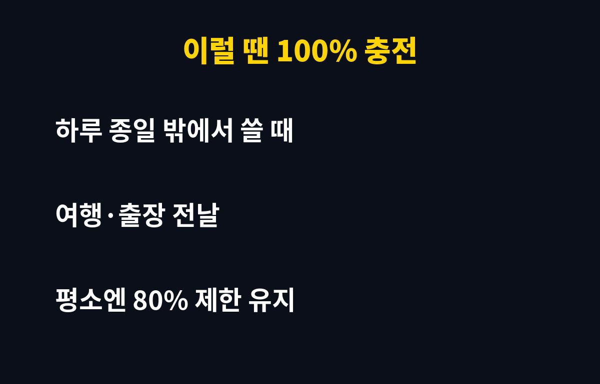

배터리 충전 80% 제한은 매일 밤 가득 충전하는 습관 때문에 빨리 늙는 리튬이온 배터리를 지켜 주는 설정이에요.
배터리 충전 80% 제한, 아직 안 켜셨다면 이 글을 끝까지 보세요. 매일 밤 끝까지 꽉 채워 충전하는 분이라면 배터리가 생각보다 빨리 늙고 있을 수 있어요. 왜 그런지, 어떻게 막는지 바로 알려드릴게요.
스마트폰 배터리는 대부분 리튬이온 방식이에요. 이 배터리는 가득 찬 상태로 오래 머물수록, 그리고 열이 날수록 빨리 닳는 성질이 있어요. 특히 잘 때 가득 충전해 두고 몇 시간씩 그대로 두는 습관이 쌓이면, 같은 폰이라도 1~2년 뒤 배터리 성능 차이가 벌어지는 이유가 됩니다.
그래서 제조사들도 충전 상한선을 두는 기능을 기본으로 넣어 주고 있어요. 문제는 많은 분들이 이 기능이 있는지조차 모르고 쓴다는 거예요.
기종과 운영체제 버전에 따라 메뉴 이름이 조금 다를 수 있지만, 보통 아래 위치에서 찾을 수 있어요.
| 기기 | 설정 위치 | 기능 |
| 아이폰 | 설정 > 배터리 > 충전 | 충전 한도·최적화 충전 |
| 갤럭시 | 설정 > 배터리 > 배터리 보호 | 충전 상한 제한 |
| 기타 안드로이드 | 설정 > 배터리 > 충전 최적화 | 기종별 상이 |

메뉴가 안 보이면 폰 소프트웨어 업데이트부터 해 보세요. 최신 버전에서 생기는 경우가 많아요.
평소 집이나 사무실에서 충전기를 자주 꽂을 수 있다면 거의 체감이 없어요. 대신 하루 종일 밖에서 써야 하는 날, 여행이나 출장 전날은 잠깐 제한을 풀고 가득 채우면 됩니다.
즉 "평소엔 제한 켜기, 필요한 날만 풀기"가 가장 현실적인 방법이에요. 이렇게만 해도 배터리를 아끼면서 불편은 최소로 줄일 수 있어요.
첫째, 충전하면서 게임이나 영상을 오래 보지 마세요. 열이 가장 큰 적이에요. 둘째, 두꺼운 케이스를 낀 채 무선충전을 하면 열이 더 잘 차니 가끔 벗겨 주세요. 셋째, 너무 싼 비인증 충전기는 피하세요.

배터리 교체 비용을 생각하면 3초 설정이 훨씬 싸게 먹혀요. 지금 폰 꺼내서 바로 확인해 보세요.
설정을 켠 뒤에는 며칠 동안 평소처럼 써 보면서 충전이 어디서 멈추는지 직접 확인해 보세요. 기종에 따라 멈추는 지점이 조금씩 다를 수 있어요.
배터리 상태 메뉴에서 최대 용량이나 배터리 수명 표시를 가끔 확인해 두면 좋아요. 지금 상태를 알아 두면 나중에 배터리가 얼마나 버티는지 비교하기 쉬워요.
충전기를 밤새 꽂아 두는 습관이 있다면 최적화 충전 기능도 함께 켜 두세요. 폰이 사용 패턴을 학습해서 일어나기 직전에 마저 채워 주는 방식이에요.
여름철 차 안이나 햇빛이 강한 창가처럼 뜨거운 곳에 폰을 두지 않는 것도 중요해요. 충전 제한을 켜도 열에 오래 노출되면 배터리는 빨리 닳아요.
반대로 배터리를 자주 바닥까지 다 쓰는 것도 좋지 않아요. 잔량이 많이 줄었다 싶으면 미리 충전기에 꽂아 두는 편이 배터리에 부담이 적어요.
오래 쓰지 않는 예비 폰이나 태블릿은 완전히 비우거나 가득 채운 상태로 보관하기보다 절반쯤 충전해 두는 것이 무난해요.
무선충전 패드를 쓴다면 폰을 정확한 위치에 올려야 해요. 위치가 어긋나면 충전이 느려지고 열이 더 날 수 있어요.
배터리가 갑자기 빨리 닳거나 뒷면이 부풀어 오르는 느낌이 있다면 설정으로 해결할 문제가 아니니 서비스센터에서 점검을 받아 보세요.
충전 습관은 한 번에 바꾸기 어렵지만 설정 하나는 지금 바로 켤 수 있어요. 오늘 밤부터 배터리 충전 80% 제한을 켜고 충전해 보세요.
케이스를 새로 고를 때도 열이 잘 빠지는 얇은 제품을 고르면 충전 중 발열을 줄이는 데 도움이 돼요.
충전 단자에 먼지가 쌓이면 접촉이 나빠져 충전이 불안정해질 수 있으니 가끔 마른 상태에서 부드럽게 청소해 주세요.
운영체제 업데이트 뒤에는 배터리 설정이 그대로 유지되는지 한 번 더 확인해 보세요.
케이블이 꺾이거나 피복이 벗겨졌다면 바로 교체하는 것이 안전해요.
이런 IT 꿀팁이 도움이 되셨다면 구독해 두시고 다음 글도 챙겨 가세요.
기사·공식 발표 기준이며 출시·가격 정보는 바뀔 수 있어요.